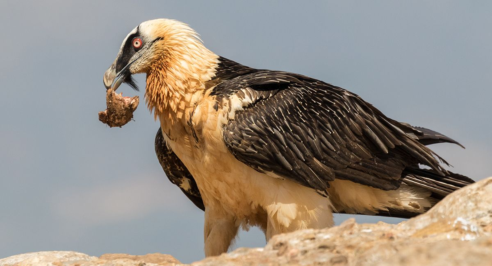

(Gypaetus Barbatus)
El quebrantahuesos (Gypaetus barbatus, literalmente buitre-águila barbado) es una especie de ave accipitriforme de la familia Accipitridae. Es un buitre notablemente distinto de otras aves de presa parecidas. Recibe su nombre por su costumbre de remontar huesos y caparazones hasta grandes alturas para soltarlos, partirlos contra las rocas y poder ingerirlos para alimentarse. Se trata de una especie amenazada en amplias zonas de su distribución, y en el continente europeo es un animal en grave peligro de extinción que ha desaparecido de varias regiones donde antes era abundante. En la actualidad se le puede observar en la cordillera Cantábrica (donde ha sido reintroducido gracias a ejemplares oscenses), los Pirineos, los Alpes (donde ha sido reintroducido), norte de África, el Gran Valle del Rift, Sudáfrica, Grecia y desde Anatolia hasta los montes Tian Shan y el Himalaya.
1. La envergadura alar de esta especie varía entre los 2,75 y los 3,00 m. 2.Su peso puede variar entre 4,5 y 7 kg. 3.Posee una cola corta en forma de rombo. 4.Los machos jóvenes tienen las plumas de la cabeza de color negro, mientras que los adultos la tienen blanquecinas o ligeramente cremosas, con una suerte de corona desflecada en la nuca. 5.Las localidades montañosas son las preferidas del quebrantahuesos, el cual suele sobrevolar con constancia para conseguir alimento para él y sus crías si las tiene.